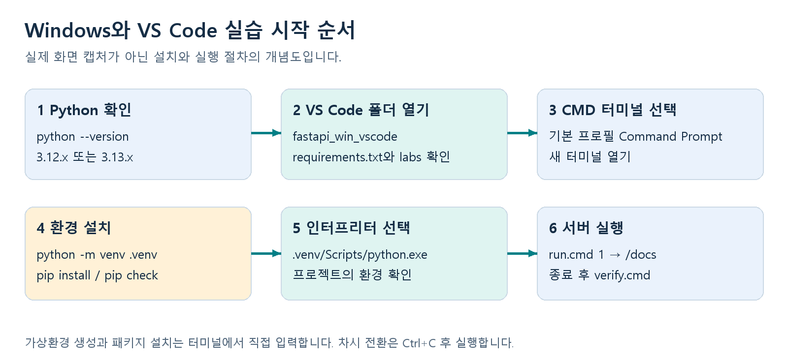

기본 터미널은 Command Prompt(CMD)다. 가상환경 생성과 패키지 설치는 터미널에서 순서대로 진행하고, 이후에는 차시별로 run.cmd 번호를 실행한다.

Windows와 VS Code 설치 및 실행 순서
Windows와 VS Code 준비
기준 환경은 Windows 10 또는 11의 64비트 PC, VS Code, Python 3.12 또는 3.13이다. 이미 둘 중 하나가 설치되어 있으면 그대로 사용한다. 신규 설치는 공식 Windows 다운로드 페이지의 Python 3.13 계열 Windows installer 64-bit를 선택한다. embeddable package와 source archive는 이 수업의 설치 파일이 아니다.
1 Python이 있는지 먼저 확인
Windows 시작 메뉴에서 명령 프롬프트를 열고 아래 두 줄을 따로 입력한다. C:\...> 같은 프롬프트 표시는 입력하지 않는다.
python --version
where python
첫 줄은 Python 3.12.x 또는 Python 3.13.x, 둘째 줄은 실제 python.exe 경로가 나오면 된다. py 명령은 사용하지 않는다. Python 3.14 이상이나 다른 버전만 보이면 3.12/3.13을 선택하거나 추가 설치한다. 수업 검증 버전은 3.12.14와 3.13.12다.
2 Python이 없거나 Microsoft Store가 열리는 경우
Python 공식 사이트 https://www.python.org/downloads/windows/에서 위 조건의 설치 파일을 받는다. 일반 설치 화면에서 Add python.exe to PATH를 체크하고 설치한다. 설치 후 열린 VS Code와 터미널을 모두 종료하고 다시 연 뒤 두 명령을 재확인한다. VS Code에서 인터프리터를 선택하는 것과 Windows PATH 설정은 별개다.
3 VS Code와 Python 확장 설치
VS Code는 https://code.visualstudio.com/에서 설치한다. VS Code의 확장 화면 Ctrl+Shift+X에서 Microsoft가 배포한 Python 확장 ms-python.python과 Python Debugger 확장 ms-python.debugpy를 설치하거나 설치 여부를 확인한다. 프로젝트에는 두 확장 추천 설정이 들어 있다.
Python 설치 화면과 VS Code 버튼 조작은 공식 안내를 바탕으로 작성했다. 이 자료의 자동 검증은 설치된 Python에서 시작하는 명령 실행을 대상으로 한다.
프로젝트 폴더와 터미널 선택
4 압축을 풀고 정확한 폴더 열기
ZIP을 먼저 압축 해제한다. 권장 위치 예시는 C:\001.AI4_202610\fastapi_win_vscode다. VS Code의 File → Open Folder에서 fastapi_win_vscode 폴더 자체를 연다. 상위의 001.AI4_202610 폴더나 labs만 열지 않는다. 이미 받은 예전 자료와 섞지 않고 개정판 폴더를 연다.
fastapi_win_vscode/
.vscode/
labs/
scripts/
tests/
requirements.txt
run.cmd
verify.cmd
왼쪽 탐색기에 requirements.txt, labs, .vscode가 함께 보이면 맞는 폴더다. .venv는 설치 후 생기며 ZIP에는 포함하지 않는다. 본인이 확인한 수업 자료의 작업 공간 신뢰 여부를 묻는 경우 신뢰를 허용해야 실행 설정을 사용할 수 있다.
5 기본 터미널을 Command Prompt로 맞추기
Ctrl+Shift+P → Terminal: Select Default Profile → Command Prompt를 선택한다. 한글 UI에서는 메뉴 명칭이 번역되어 표시될 수 있다. 기존 터미널은 휴지통 버튼으로 닫고 Terminal → New Terminal로 새 터미널을 연다. 새 터미널의 프롬프트가 C:\...> 형식이면 CMD다. PS C:\...> 형식이면 PowerShell이다.
dir
목록에 labs와 requirements.txt가 있어야 한다. 없으면 VS Code에서 올바른 폴더를 다시 연다. 수업의 기본 명령은 CMD 기준이다. 프로젝트에는 새 터미널을 CMD로 여는 설정도 포함되어 있다.
터미널에서 가상환경 직접 만들기
6 CMD에 아래 명령을 한 줄씩 입력
VS Code에서 fastapi_win_vscode 폴더를 열고 CMD 터미널을 사용한다. python --version이 3.12.x 또는 3.13.x인지 먼저 확인한다. .venv가 아직 없는 상태에서 아래 순서로 실행한다.
python --version
python -m venv .venv
.venv\Scripts\activate.bat
python -m pip install -r requirements.txt
python -m pip check
python -m venv .venv는 프로젝트 안에 가상환경을 만든다. activate.bat는 현재 CMD 터미널의 python이 이 환경을 사용하도록 바꾼다. 설치가 끝날 때까지 기다린 뒤 pip check의 No broken requirements found.를 확인한다.
현재 터미널이 사용하는 Python 확인
python -c "import sys; print(sys.executable)"
출력 경로가 현재 프로젝트의 .venv\Scripts\python.exe로 끝나야 한다. 새 CMD 터미널을 열었다면 .venv\Scripts\activate.bat를 다시 입력한다. 가상환경에서 나갈 때는 deactivate를 입력한다.
이미 .venv가 있는 경우
정상적인 환경이라면 생성 명령을 반복할 필요 없이 활성화부터 진행한다. 깨진 환경은 서버를 종료하고 탐색기에서 .venv_old로 이름을 바꾼 뒤 새로 만든다. labs나 개인 코드 파일은 삭제하지 않는다.
PowerShell에서 설치하는 경우
python -m venv .venv
.\.venv\Scripts\python.exe -m pip install -r requirements.txt
.\.venv\Scripts\python.exe -m pip check
PowerShell에서는 가상환경의 Python을 직접 지정한다. Activate.ps1 실행이나 실행 정책 변경 없이 설치할 수 있다. 다음 단계에서 VS Code 인터프리터를 .venv로 선택한다.
VS Code 인터프리터와 첫 서버
7 프로젝트의 Python 선택
Ctrl+Shift+P → Python: Select Interpreter를 실행한다. 목록에서 프로젝트의 .venv를 선택한다. 보이지 않으면 Enter interpreter path → Find에서 fastapi_win_vscode\.venv\Scripts\python.exe를 직접 고른다. Python 파일을 열고 상태 표시줄의 환경을 확인한다. 기존에 고른 다른 프로젝트 환경이 있다면 반드시 다시 선택한다.
8 1차시 서버 실행
run.cmd 1
CMD 터미널에서 실행한다. Uvicorn running on http://127.0.0.1:8000과 Application startup complete 로그가 보이면 브라우저를 연다. 서버가 실행 중인 터미널은 요청을 기다리므로 다음 명령을 입력하지 않고 그대로 둔다.
http://127.0.0.1:8000/
http://127.0.0.1:8000/docs
첫 주소에서 {"message":"Hello FastAPI"}를 확인한다. /docs에서 GET / → Try it out → Execute를 누르고 200을 확인한다. 브라우저의 JSON 키 표시 순서는 달라도 된다.
9 수정 후 재시작과 차시 전환
실행한 터미널을 클릭해 Ctrl+C로 종료한다. lesson01.py의 message를 수정하고 Ctrl+S로 저장한 뒤 run.cmd 1을 다시 실행한다. 새로고침해 응답 변경을 확인한다. 확인 후 원래 코드로 복원한다. 2차시는 종료 후 run.cmd 2, 최종 8차시는 run.cmd 8이다.
실습의 기본 실행은 자동 재시작 옵션 없이 진행한다. VS Code의 Run Python File 삼각형 버튼은 Python 파일 실행 기능이므로 FastAPI 서버를 여는 수업 명령 대신 사용하지 않는다. 서버는 run.cmd 또는 다음 페이지의 전용 F5 구성으로 실행한다.
CMD와 PowerShell 명령 구분
기본 수업은 CMD를 사용한다. PowerShell 터미널을 유지하고 싶다면 현재 폴더의 파일 앞에 .\를 붙인다. 아래 두 묶음을 섞지 않는다. 모든 줄은 fastapi_win_vscode 폴더에서 실행한다.
CMD 기본 명령
python --version
where python
python -m venv .venv
.venv\Scripts\activate.bat
python -m pip install -r requirements.txt
run.cmd 1
verify.cmd
PowerShell 대응 명령
python --version
where.exe python
python -m venv .venv
.\.venv\Scripts\python.exe -m pip install -r requirements.txt
.\run.cmd 1
.\verify.cmd
서버 실행과 검증은 동시에 입력하는 한 묶음이 아니다. run.cmd로 서버를 실행해 실습을 마친 후 Ctrl+C로 종료하고 verify.cmd를 실행한다. 위 목록은 명령 대응표다.
원리를 익히는 수동 명령 CMD
python -m venv .venv
.venv\Scripts\python.exe -m pip install -r requirements.txt
.venv\Scripts\python.exe -m uvicorn labs.lesson01:app
수동 명령은 .venv가 아직 없고 python 버전이 3.12 또는 3.13인 상태에서 환경을 직접 만들 때 사용한다. 이미 가상환경과 패키지를 설치했다면 서버 명령만 실행한다. 이 경로의 Python으로 설치와 실행을 통일한다.
원리를 익히는 수동 명령 PowerShell
.\.venv\Scripts\python.exe -m uvicorn labs.lesson01:app
전체 python.exe 경로를 따옴표로 감싸 실행할 때 CMD는 "C:\실제경로\python.exe" 형식, PowerShell은 & "C:\실제경로\python.exe" 형식이다. 표시한 실제경로는 설명용이므로 그대로 복사하지 않는다.
VS Code 실행 설정과 전체 검증
10 F5로 차시별 실행 선택
기존 서버를 먼저 Ctrl+C로 종료한다. VS Code의 Run and Debug 화면에서 Lesson 01 - FastAPI부터 Lesson 08 - FastAPI 중 해당 구성을 선택하고 F5를 누른다. .vscode/launch.json은 .venv Python으로 uvicorn 모듈을 실행한다. 중지는 Shift+F5다. 코드 수정 후 중지하고 다시 실행한다.
11 명령 팔레트의 작업으로 실행
Ctrl+Shift+P → Tasks: Run Task → FastAPI: Run lesson을 선택하면 차시와 포트를 고를 수 있다. FastAPI: Check environment는 환경 진단, FastAPI: Verify all은 전체 테스트다. 설정 파일은 프로젝트 안에 포함되어 있고 사용자 전역 설정을 직접 수정하지 않는다.
12 서버 종료 후 전체 테스트
verify.cmd
정상 결과는 ENVIRONMENT OK와 88 passed다. 검증된 고정 버전에서는 Starlette가 httpx 기반 TestClient의 향후 변경을 알리는 deprecation 경고 1건을 출력할 수 있다. 실패나 오류와 구분한다. 자신이 실습 중 기본 코드를 바꾼 경우에는 해당 변경이 테스트 기대와 맞는지도 확인한다.
8차시 서버에서 HTTP 시나리오 실행
첫 번째 CMD 터미널에서 run.cmd 8로 서버를 켠다. 두 번째 CMD 터미널을 같은 프로젝트에서 열고 아래 명령을 실행한다. 200·201·204·404·405·422를 확인하며 생성한 과제는 마지막에 삭제한다.
.venv\Scripts\python.exe scripts\http_walkthrough.py
제공된 소스와 tests 폴더로 학생 PC에서도 검증할 수 있다. CMD에서 verify.cmd를 실행해 환경 진단과 88개 테스트 결과를 확인한다. VS Code의 버튼 클릭 자체는 자동 검증하지 않았고, 실행 설정에 지정한 명령은 실제 HTTP 응답으로 검증했다.
자주 막히는 지점
python을 찾지 못하거나 Store가 열림
Python 설치와 PATH를 확인한다. 설치 후 VS Code 전체를 종료하고 다시 연다. CMD에서 where python으로 실제 경로를 확인하고, 필요한 경우 CMD에서 실제 python.exe 경로를 따옴표로 감싸 -m venv .venv를 실행한다. py 실행기는 필요하지 않다.
requirements.txt를 찾지 못함
압축을 먼저 풀고 labs와 requirements.txt가 함께 있는 fastapi_win_vscode 폴더를 VS Code로 연다. CMD에서 dir로 확인한 뒤 가상환경 생성과 패키지 설치 명령을 실행한다.
지원하지 않는 Python 버전
python --version이 3.12.x 또는 3.13.x인지 확인한다. 여러 버전이 설치되어 있으면 사용할 버전의 python.exe 전체 경로로 -m venv .venv를 실행한다. 최신이라는 이유만으로 다른 주 버전을 선택하지 않는다.
가상환경 생성 또는 패키지 설치 실패
처음 나온 오류부터 확인한다. Python 버전, 네트워크·프록시·폴더 권한·디스크 공간을 확인한다. 정상 .venv가 있으면 활성화 후 설치 명령만 다시 실행한다. 깨진 .venv는 이름을 바꿔 보존한 뒤 새로 만든다.
Python import에 빨간 밑줄이 보임
패키지 설치와 pip check가 정상 종료됐는지 확인한 뒤 Python: Select Interpreter에서 이 프로젝트의 .venv\Scripts\python.exe를 선택한다. VS Code에서 선택한 환경과 Windows의 기본 python은 다를 수 있다.
포트 8000을 사용할 수 없음
실행 중인 다른 수업 서버를 Ctrl+C 또는 Shift+F5로 종료한다. 종료할 수 없다면 CMD에서 run.cmd 1 --port 8001로 실행하고 브라우저도 http://127.0.0.1:8001/docs를 연다. Tasks: Run Task에서도 포트를 바꿀 수 있다.
서버가 실행되자 터미널이 멈춘 것처럼 보임
정상적으로 요청을 기다리는 상태일 수 있다. 브라우저에서 /docs를 연다. 명령을 추가로 입력할 때는 새 터미널을 쓰고, 서버 종료는 해당 터미널의 Ctrl+C로 한다.
앱을 import하지 못하거나 Python 파일 실행만 끝남
프로젝트 폴더를 바로 열고 run.cmd의 차시 번호를 사용한다. 수동 실행 시 labs.lesson08.main:app 같은 모듈 경로를 정확히 쓴다. FastAPI 파일 자체를 Run Python File로 실행하면 서버가 시작되지 않는다.
POST 요청 또는 JSON 응답이 예상과 다름
POST·PUT·PATCH·DELETE는 /docs에서 Method를 고르고 실행한다. 204 삭제 성공은 빈 본문이므로 JSON 파싱을 하지 않는다. 경로와 타입 오류는 404·405·422를 구분해서 읽는다.
저장한 과제가 사라지거나 docs가 열리지 않음
재시작하면 메모리 데이터가 기본 상태로 돌아온다. /docs의 외부 CDN 리소스가 차단된 환경에서는 /openapi.json이나 제공된 HTTP 시나리오와 테스트로 API를 확인한다. --reload 변경 반영은 검증 범위에서 제외하고 수동 재시작을 사용한다.
실제 검증 범위
Windows에서 Python 3.12.14와 3.13.12로 동일한 88개 테스트를 각각 실행해 모두 통과했다. 실패 0건, 오류 0건이다. Python 3.13의 독립 가상환경에서 패키지 설치와 실행을 확인했다. CMD와 PowerShell의 run.cmd 실행, VS Code launch 구성 8개와 task에 지정한 명령의 실제 HTTP 응답도 검증했다. VS Code GUI의 클릭 조작은 자동화하지 않았다. --reload 변경 반영은 이 환경의 프로세스 교체 제한으로 제외하고 수동 재시작을 기본으로 한다.
8차시 전체 이론과 실습 교안 열기